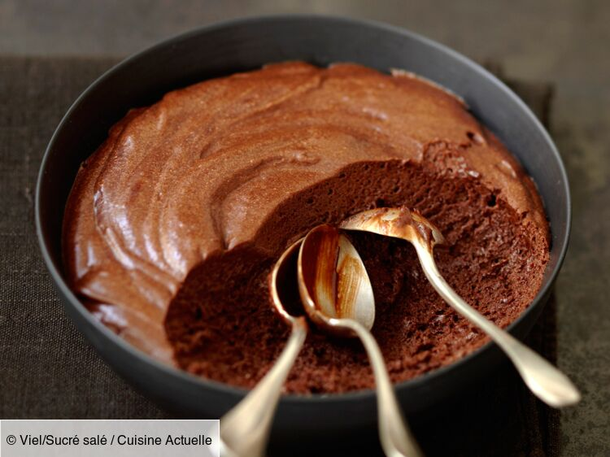

Mousse au chocolat

Ingredients
pour 3 personnes
- 100 grammes de chocolat noir
- 1 sachet de sucre vanillé OU 1 pincée de sel
- 3oeufs
Preparations
- Séparer les blancs des jaunes d'oeufs
- Faire ramollir le chocolat dans une casserole
- Hors du feu, incorporer les jaunes et le sucre
- Battre les blanc en neige ferme
- Ajouter délicatement les blanc au mélange à l'aide d'une spatule
- Verser dans une terrine ou des verrines
- Mettre au frais 2h minimum
- Décorer de cacao ou de chocolat râpé